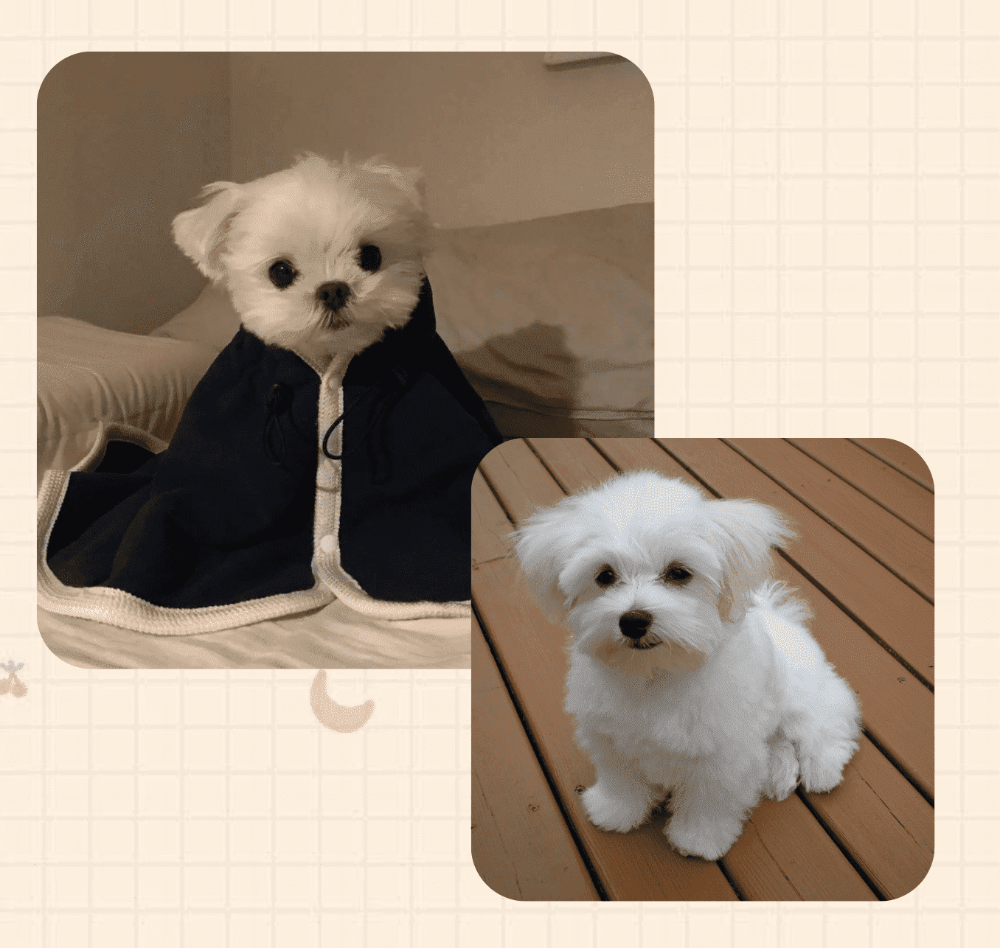

馬爾濟斯犬
（又稱為馬爾他犬、馬爾他島獵犬，譯為"魔天使")
耳朵：呈下垂狀的耳朵也長滿了濃密披毛，常會混在體毛中，位置較不明顯。
眼睛：渾圓杏眼、深黑眼眶，是瑪爾濟斯最主要的特徵之一，同時雙眼間距不可太開。
頭部：頭骨形狀是圓潤的弧形，額段與鼻子呈L型，眼睛與鼻子則為三點黑，齒不外露。
毛皮：力求又長又直的光滑絲綢狀毛質，毛量豐厚濃密，鬚毛淺黃色為正常。
身體：體型嬌小勻稱，背線平順，胸部結構完整，整體比例身長=身高1：1。
尾巴：尾巴不能緊貼，應捲曲於背上，尾尖與身體接觸的點約落在腰部。

外形漂亮
在古埃及、希臘和羅馬時代就已經是貴婦的寵物，古羅馬人還曾經把它放在袖子裡帶它去出門。
不掉毛
雖然馬爾濟斯的毛髮長，但是不掉毛，為主人節省掉毛的煩惱。
食量少
馬爾濟斯狗狗是小型犬，食量固然是沒有那些中大型犬的食量大，可是依然要留意給狗狗充沛的滋補哦，狗狗才會健壯生長。
性格好
馬爾濟斯的性格特別的好，很溫順，它不會記仇。馬爾濟斯對小孩非常友善，特別溫柔，還可以從小培養孩子的愛心了，因此馬爾濟斯是很好的伴侶犬。


注意溫度和濕度
長毛犬種本身比較害怕熱氣與溼氣，建議狗爸媽們在室內飼養瑪爾濟斯，並將溫度控制在24～28度之間，避免夏季的炎熱氣候讓愛犬活動力下降、精神不振。
儀容整理
如果不時常修剪梳洗，細而柔的長毛很容易糾纏成毛球，進而引致皮膚病，所以也常有飼主將其修剪為短毛型。
※特別是眼部有淚腺和嘴部因為喝水，導致毛色可能會泛紅和泛黃。
適量運動
馬爾濟斯屬於室內犬，雖然對於運動量的需求沒有那麼大，但還是建議要多讓他們活動，藉由運動產生抗體、消耗能量，才能讓他們主動攝取熱量，即使多生活在室內，也必須要有最少一坪的活動空間，注意地面的止滑，若在磁磚、木板上運動，就很可能影響未來骨骼的發展。
注意衛生
應經常為它梳刷清理，保持清潔美觀。還應定期洗澡、清險耳垢、牙垢，用溫水洗眼，修剪爪子等。每隔3~5天，用2%的硼酸水為它洗眼，以防止眼疾發生。

犬慢性心瓣膜疾病 Chronic valvular heart disease（CVHD）
因為品種的關係，容易成為心瓣膜疾病的高危險群。
但只要早期發現早期治療，慢性心瓣膜疾病並不可怕，只要給予適當的照顧與藥物幫助，通常都可保有正常的壽命與生活品質。
水腦症 Hydrocephalus
水腦症是一種腦室中的液體過度蓄積的疾病。
其成因是由於腦部周圍的腦脊髓液的流動阻塞而造成。可分為先天遺傳性及後天因為發炎、腫瘤、出血而續發造成的。
白狗搖擺症侯群 White Shaker Dog Syndrome
此症會因腦炎而有神經症狀，如步態不穩而跌倒，造成生活上容易摔倒受傷。
有時候狗狗會長期間斷性的走路不穩而影響到一些日常的行為。如因震顫而造成取食困難的情況。由於此種疾病會有癲癇的發生，而未控制或未良好控制的癲癇對狗狗來講都是一件危險的事。